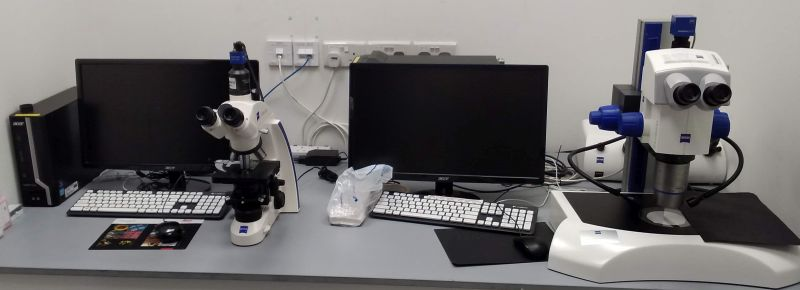

⁝☰
System Overview
ABIF
Booking System
|
Basic optical microscopes

Carl Zeiss Primo Star:
Basic upright microscope for transmitted light imaging
Available objectives:
4x/0.10
10x/0.25
40x/0.65
100x/1.25 oil
AxioCam 105 CMOS camera (RGB colour, 2560x1920 pixels, 2.2 µm/pixel, 0.5x C-mount adapter)
Carl Zeiss V.8 Discovery stereomicroscope:
Objective Plan Apo S 1.5x, free working distance 30 mm
Zoom 1 – 8x
Transmitted or reflected (gooseneck from above) light illumination
AxioCam ICc3 CMOS camera (RGB colour, 2080x1540 pixels, 3.45 µm/pixel)
Software:
ZEN lite 3.2
Usage fees [SGD/hour]
Academia
Industry
0
0
Location
ABIF, SCELSE, B2 (SBS-B2n-27P)
Contact
abif@e.ntu.edu.sg
BACK TO TOP